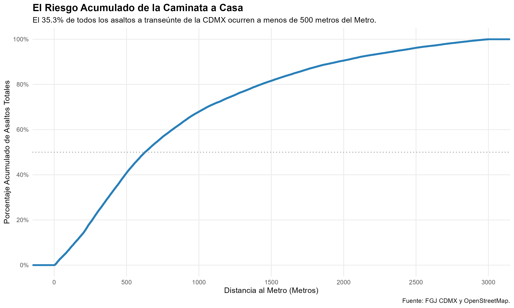
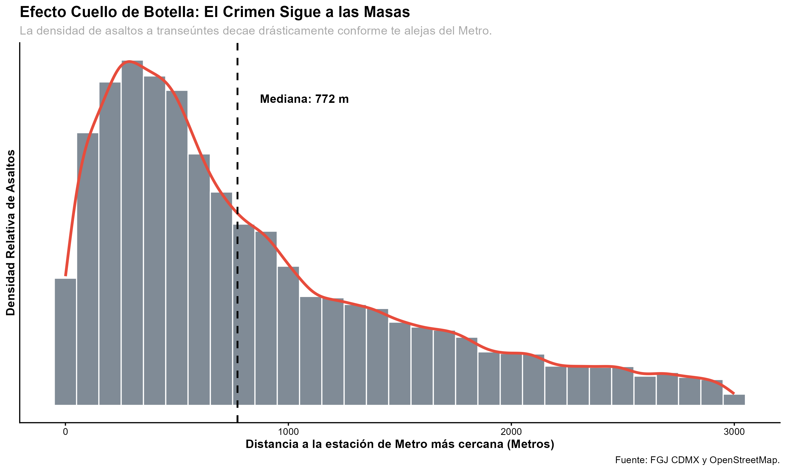
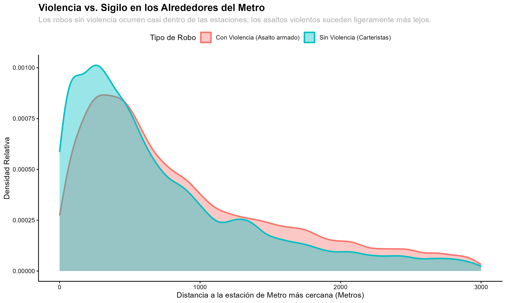
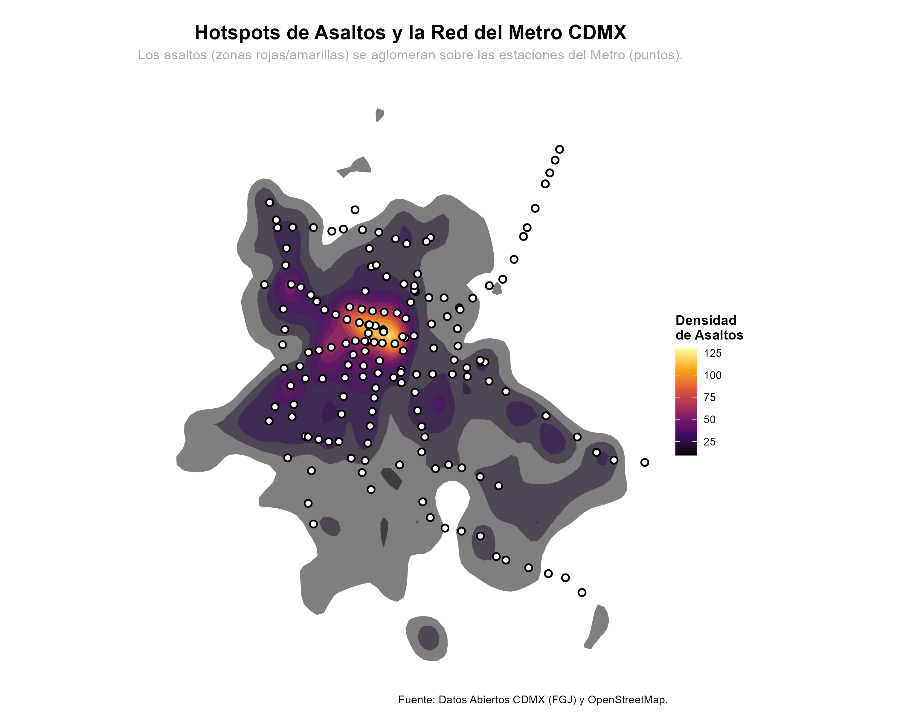

El diseño de la infraestructura urbana de movilidad concentra diariamente el flujo de millones de personas. Este texto examina cómo dicha convergencia determina la distribución geográfica del delito a transeúnte en la Ciudad de México.
A partir de un análisis cuantitativo y geoespacial, se evalúa si la proximidad a las estaciones del Metro predice la densidad delictiva, controlando por el flujo peatonal que estas generan.
A partir de un análisis cuantitativo y geoespacial, se procesaron y cruzaron dos bases de datos:
Este enfoque elimina el sesgo de escala al trabajar con distancias individuales en lugar de conteos por colonia, y usa datos objetivos de infraestructura en lugar de reportes ciudadanos.
Los indicadores demuestran estadísticamente que el riesgo se incrementa de forma pronunciada en los trayectos directos de acceso y salida de las estaciones:

Al analizar la frecuencia absoluta de los robos frente a la distancia, observamos el claro "Decaimiento Espacial":

Al segmentar por tipología penal, se identifica una variación operativa en las distancias:

La visualización espacial de los datos confirma que los clústeres de alta incidencia (hotspots) se alinean geográficamente con el trazado de la red del Metro.

La intersección de las bases de datos de la FGJ y OpenStreetMap proporciona evidencia rigurosa sobre cómo la red del Metro estructura la distribución espacial del crimen a transeúnte en la CDMX.